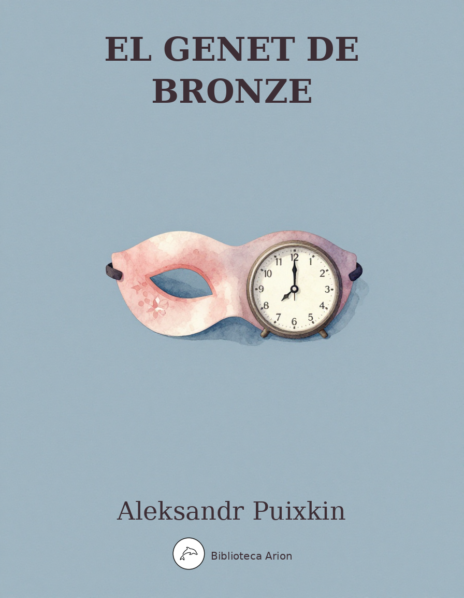

El genet de bronze
Медный всадник
Poema narratiu sobre la gran inundació de Sant Petersburg de 1824 i el conflicte entre l'individu i el poder estatal, simbolitzat per l'estàtua eqüestre de Pere el Gran.
Петербургская повесть
Александр Сергеевич Пушкин (1833)
Предисловие
Происшествие, описанное в сей повести, основано на истине. Подробности наводнения заимствованы из тогдашних журналов. Любопытные могут справиться с известием, составленным В. Н. Берхом.
Вступление
На берегу пустынных волн Стоял он, дум великих полн, И вдаль глядел. Пред ним широко Река неслася; бедный чёлн По ней стремился одиноко. По мшистым, топким берегам Чернели избы здесь и там, Приют убогого чухонца; И лес, неведомый лучам В тумане спрятанного солнца, Кругом шумел.
И думал он: Отсель грозить мы будем шведу, Здесь будет город заложён На зло надменному соседу. Природой здесь нам суждено В Европу прорубить окно, Ногою твёрдой стать при море. Сюда по новым им волнам Все флаги в гости будут к нам, И запируем на просторе.
Прошло сто лет, и юный град, Полнощных стран краса и диво, Из тьмы лесов, из топи блат Вознёсся пышно, горделиво; Где прежде финский рыболов, Печальный пасынок природы, Один у низких берегов Бросал в неведомые воды Свой ветхой невод, ныне там По оживлённым берегам Громады стройные теснятся Дворцов и башен; корабли Толпой со всех концов земли К богатым пристаням стремятся; В гранит оделася Нева; Мосты повисли над водами; Тёмно-зелёными садами Её покрылись острова, И перед младшею столицей Померкла старая Москва, Как перед новою царицей Порфироносная вдова.
Люблю тебя, Петра творенье, Люблю твой строгий, стройный вид, Невы державное теченье, Береговой её гранит, Твоих оград узор чугунный, Твоих задумчивых ночей Прозрачный сумрак, блеск безлунный, Когда я в комнате моей Пишу, читаю без лампады, И ясны спящие громады Пустынных улиц, и светла Адмиралтейская игла, И, не пуская тьму ночную На золотые небеса, Одна заря сменить другую Спешит, дав ночи полчаса. Люблю зимы твоей жестокой Недвижный воздух и мороз, Бег санок вдоль Невы широкой, Девичьи лица ярче роз, И блеск, и шум, и говор балов, А в час пирушки холостой Шипенье пенистых бокалов И пунша пламень голубой. Люблю воинственную живость Потешных Марсовых полей, Пехотных ратей и коней Однообразную красивость, В их стройно зыблемом строю Лоскутья сих знамён победных, Сиянье шапок этих медных, На сквозь простреленных в бою. Люблю, военная столица, Твоей твердыни дым и гром, Когда полнощная царица Дарует сына в царской дом, Или победу над врагом Россия снова торжествует, Или, взломав свой синий лёд, Нева к морям его несёт И, чуя вешни дни, ликует.
Красуйся, град Петров, и стой Неколебимо как Россия, Да умирится же с тобой И побеждённая стихия; Вражду и плен старинный свой Пусть волны финские забудут И тщетной злобою не будут Тревожить вечный сон Петра!
Была ужасная пора, Об ней свежо воспоминанье… Об ней, друзья мои, для вас Начну своё повествованье. Печален будет мой рассказ.
Часть первая
Над омрачённым Петроградом Дышал ноябрь осенним хладом. Плеская шумною волной В края своей ограды стройной, Нева металась, как больной В своей постеле беспокойной. Уж было поздно и темно; Сердито бился дождь в окно, И ветер дул, печально воя. В то время из гостей домой Пришёл Евгений молодой… Мы будем нашего героя Звать этим именем. Оно Звучит приятно; с ним давно Моё перо к тому же дружно. Прозванья нам его не нужно, Хотя в минувши времена Оно, быть может, и блистало И под пером Карамзина В родных преданьях прозвучало; Но ныне светом и молвой Оно забыто. Наш герой Живёт в Коломне; где-то служит, Дичится знатных и не тужит Ни о почиющей родне, Ни о забытой старине.
Итак, домой пришед, Евгений Стряхнул шинель, разделся, лёг. Но долго он заснуть не мог В волненье разных размышлений. О чём же думал он? о том, Что был он беден, что трудом Он должен был себе доставить И независимость и честь; Что мог бы Бог ему прибавить Ума и денег. Что ведь есть Такие праздные счастливцы, Ума недальнего, ленивцы, Которым жизнь куда легка! Что служит он всего два года; Он также думал, что погода Не унималась; что река Всё прибывала; что едва ли С Невы мостов уже не сняли И что с Парашей будет он Дни на два, на три разлучён. Евгений тут вздохнул сердечно И размечтался, как поэт:
«Жениться? Мне? зачем же нет? Оно и тяжело, конечно; Но что ж, я молод и здоров, Трудиться день и ночь готов; Уж кое-как себе устрою Приют смиренный и простой И в нём Парашу успокою. Пройдёт, быть может, год-другой — Местечко получу, Параше Препоручу семейство наше И воспитание ребят… И станем жить, и так до гроба Рука с рукой дойдём мы оба, И внуки нас похоронят…»
Так он мечтал. И грустно было Ему в ту ночь, и он желал, Чтоб ветер выл не так уныло И чтобы дождь в окно стучал Не так сердито… Сонны очи Он наконец закрыл. И вот Редеет мгла ненастной ночи И бледный день уж настаёт… Ужасный день! Нева всю ночь Рвалася к морю против бури, Не одолев их буйной дури… И спорить стало ей невмочь… Поутру над её брегами Теснился кучами народ, Любуясь брызгами, горами И пеной разъярённых вод. Но силой ветров от залива Переграждённая Нева Обратно шла, гневна, бурлива, И затопляла острова, Погода пуще свирепела, Нева вздувалась и ревела, Котлом клокоча и клубясь, И вдруг, как зверь остервенясь, На город кинулась. Пред нею Всё побежало, всё вокруг Вдруг опустело — воды вдруг Втекли в подземные подвалы, К решёткам хлынули каналы, И всплыл Петрополь как тритон, По пояс в воду погружён.
Осада! приступ! злые волны, Как воры, лезут в окна. Чёлны С разбега стёкла бьют кормой. Лотки под мокрой пеленой, Обломки хижин, брёвны, кровли, Товар запасливой торговли, Пожитки бледной нищеты, Грозой снесённые мосты, Гроба с размытого кладбища Плывут по улицам! Народ Зрит Божий гнев и казни ждёт. Увы! всё гибнет: кров и пища! Где будет взять? В тот грозный год Покойный царь ещё Россией Со славой правил. На балкон, Печален, смутен, вышел он И молвил: «С Божией стихией Царям не совладеть». Он сел И в думе скорбными очами На злое бедствие глядел. Стояли стогны озерами, И в них широкими реками Вливались улицы. Дворец Казался островом печальным. Царь молвил — из конца в конец, По ближним улицам и дальным В опасный путь средь бурных вод Его пустились генералы Спасать и страхом обуялый И дома тонущий народ.
Тогда, на площади Петровой, Где дом в углу вознёсся новый, Где над возвышенным крыльцом С подъятой лапой, как живые, Стоят два льва сторожевые, На звере мраморном верхом, Без шляпы, руки сжав крестом, Сидел недвижный, страшно бледный Евгений. Он страшился, бедный, Не за себя. Он не слыхал, Как подымался жадный вал, Ему подошвы подмывая, Как дождь ему в лицо хлестал, Как ветер, буйно завывая, С него и шляпу вдруг сорвал. Его отчаянные взоры На край один наведены Недвижно были. Словно горы, Из возмущённой глубины Вставали волны там и злились, Там буря выла, там носились Обломки… Боже, Боже! там — Увы! близёхонько к волнам, Почти у самого залива — Забор некрашеный, да ива И ветхий домик: там оне, Вдова и дочь, его Параша, Его мечта… Или во сне Он это видит? иль вся наша И жизнь ничто, как сон пустой, Насмешка неба над землёй?
И он, как будто околдован, Как будто к мрамору прикован, Сойти не может! Вкруг него Вода и больше ничего! И, обращён к нему спиною, В неколебимой вышине, Над возмущённою Невою Стоит с простёртою рукою Кумир на бронзовом коне.
Часть вторая
Но вот, насытясь разрушеньем И наглым буйством утомясь, Нева обратно повлеклась, Своим любуясь возмущеньем И покидая с небреженьем Свою добычу. Так злодей, С свирепой шайкою своей В село ворвавшись, ломит, режет, Крушит и грабит; вопли, скрежет, Насилье, брань, тревога, вой!.. И, грабежом отягощённы, Боясь погони, утомлённы, Спешат разбойники домой, Добычу на пути роняя.
Вода сбыла, и мостовая Открылась, и Евгений мой Спешит, душою замирая, В надежде, страхе и тоске К едва смирившейся реке. Но, торжеством победы полны, Ещё кипели злобно волны, Как бы под ними тлел огонь, Ещё их пена покрывала, И тяжело Нева дышала, Как с битвы прибежавший конь. Евгений смотрит: видит лодку; Он к ней бежит как на находку; Он перевозчика зовёт — И перевозчик беззаботный Его за гривенник охотно Чрез волны страшные везёт.
И долго с бурными волнами Боролся опытный гребец, И скрыться вглубь меж их рядами Всечасно с дерзкими пловцами Готов был чёлн — и наконец Достиг он берега. Несчастный Знакомой улицей бежит В места знакомые. Глядит, Узнать не может. Вид ужасный! Всё перед ним завалено; Что сброшено, что снесено; Скривились домики, другие Совсем обрушились, иные Волнами сдвинуты; кругом, Как будто в поле боевом, Тела валяются. Евгений Стремглав, не помня ничего, Изнемогая от мучений, Бежит туда, где ждёт его Судьба с неведомым известьем, Как с запечатанным письмом. И вот бежит уж он предместьем, И вот залив, и близок дом… Что ж это?.. Он остановился. Пошёл назад и воротился. Глядит… идёт… ещё глядит. Вот место, где их дом стоит; Вот ива. Были здесь вороты — Снесло их, видно. Где же дом? И, полон сумрачной заботы, Всё ходит, ходит он кругом, Толкует громко сам с собою — И вдруг, ударя в лоб рукою, Захохотал. Ночная мгла На город трепетный сошла; Но долго жители не спали И меж собою толковали О дне минувшем. Утра луч Из-за усталых, бледных туч Блеснул над тихою столицей И не нашёл уже следов Беды вчерашней; багряницей Уже прикрыто было зло. В порядок прежний всё вошло. Уже по улицам свободным С своим бесчувствием холодным Ходил народ. Чиновный люд, Покинув свой ночной приют, На службу шёл. Торгаш отважный, Не унывая, открывал Невой ограбленный подвал, Сбираясь свой убыток важный На ближнем выместить. С дворов Свозили лодки. Граф Хвостов, Поэт, любимый небесами, Уж пел бессмертными стихами Несчастье невских берегов.
Но бедный, бедный мой Евгений… Увы! его смятенный ум Против ужасных потрясений Не устоял. Мятежный шум Невы и ветров раздавался В его ушах. Ужасных дум Безмолвно полон, он скитался. Его терзал какой-то сон. Прошла неделя, месяц — он К себе домой не возвращался. Его пустынный уголок Отдал внаймы, как вышел срок, Хозяин бедному поэту. Евгений за своим добром Не приходил. Он скоро свету Стал чужд. Весь день бродил пешком, А спал на пристани; питался В окошко поданным куском. Одежда ветхая на нём Рвалась и тлела. Злые дети Бросали камни вслед ему. Нередко кучерские плети Его стегали, потому Что он не разбирал дороги Уж никогда; казалось — он Не примечал. Он оглушён Был шумом внутренней тревоги. И так он свой несчастный век Влачил, ни зверь ни человек, Ни то ни сё, ни житель света, Ни призрак мёртвый… Раз он спал У невской пристани. Дни лета Клонились к осени. Дышал Ненастный ветер. Мрачный вал Плескал на пристань, ропща пени И бьясь об гладкие ступени, Как челобитчик у дверей Ему не внемлющих судей. Бедняк проснулся. Мрачно было: Дождь капал, ветер выл уныло, И с ним вдали, во тьме ночной Перекликался часовой… Вскочил Евгений; вспомнил живо Он прошлый ужас; торопливо Он встал; пошёл бродить, и вдруг Остановился — и вокруг Тихонько стал водить очами С боязнью дикой на лице. Он очутился под столбами Большого дома. На крыльце С подъятой лапой, как живые, Стояли львы сторожевые, И прямо в тёмной вышине Над ограждённою скалою Кумир с простёртою рукою Сидел на бронзовом коне.
Евгений вздрогнул. Прояснились В нём страшно мысли. Он узнал И место, где потоп играл, Где волны хищные толпились, Бунтуя злобно вкруг него, И львов, и площадь, и того, Кто неподвижно возвышался Во мраке медною главой, Того, чьей волей роковой Под морем город основался… Ужасен он в окрестной мгле! Какая дума на челе! Какая сила в нём сокрыта! А в сем коне какой огонь! Куда ты скачешь, гордый конь, И где опустишь ты копыта? О мощный властелин судьбы! Не так ли ты над самой бездной На высоте, уздой железной Россию поднял на дыбы?
Кругом подножия кумира Безумец бедный обошёл И взоры дикие навёл На лик державца полумира. Стеснилась грудь его. Чело К решётке хладной прилегло, Глаза подёрнулись туманом, По сердцу пламень пробежал, Вскипела кровь. Он мрачен стал Пред горделивым истуканом И, зубы стиснув, пальцы сжав, Как обуянный силой чёрной, «Добро, строитель чудотворный! — Шепнул он, злобно задрожав, — Ужо тебе!..» И вдруг стремглав Бежать пустился. Показалось Ему, что грозного царя, Мгновенно гневом возгоря, Лицо тихонько обращалось… И он по площади пустой Бежит и слышит за собой — Как будто грома грохотанье — Тяжёло-звонкое скаканье По потрясённой мостовой. И, озарён луною бледной, Простёрши руку в вышине, За ним несётся Всадник Медный На звонко-скачущем коне; И во всю ночь безумец бедный, Куда стопы ни обращал, За ним повсюду Всадник Медный С тяжёлым топотом скакал.
И с той поры, когда случалось Идти той площадью ему, В его лице изображалось Смятенье. К сердцу своему Он прижимал поспешно руку, Как бы его смиряя муку, Картуз изношенный сымал, Смущённых глаз не подымал И шёл сторонкой.
Остров малый На взморье виден. Иногда Причалит с неводом туда Рыбак на ловле запоздалый И бедный ужин свой варит, Или чиновник посетит, Гуляя в лодке в воскресенье, Пустынный остров. Не взросло Там ни былинки. Наводненье Туда, играя, занесло Домишко ветхой. Над водою Остался он как чёрный куст. Его прошедшею весною Свезли на барке. Был он пуст И весь разрушен. У порога Нашли безумца моего, И тут же хладный труп его Похоронили ради Бога.
Font: Wikisource (ru) — РВБ (1959—1962) Llicència: Domini públic (PD-old-70)
El genet de bronze
Narració petersburguesa
Aleksandr Puixkin (1833)
Traduït del rus per Biblioteca Universal Arion
Prefaci
L’esdeveniment descrit en aquesta narració es basa en fets reals. Els detalls de la inundació estan manllevats dels diaris de l’època. Els curiosos poden consultar la relació composta per V. N. Berkh.
Introducció
A la riba de les ones desertes s’alçava ell, ple de grans pensaments, i mirava al lluny. Davant seu, ampla, el riu corria impetuós; una pobra barca s’hi llançava solitària. Per les ribes molsoses i enfangades ennegrien aquí i allà cabanes, refugi del miserable txud; i el bosc, desconegut als raigs d’un sol amagat entre la boira, bramava al voltant.
I ell pensava: «D’ací amenaçarem el suec, aquí es fundarà una ciutat per enuig del veí arrogant. La natura ens ha destinat a obrir una finestra a Europa, a plantar peu ferm vora el mar. Per ones noves per a ells totes les banderes ens vindran de visita, i festejarem a pler.»
Van passar cent anys, i la jove ciutat, ornament i meravella dels països del nord, de la fosca dels boscos, dels aiguamolls pantanosos, s’alçà esplèndida, orgullosa; on abans el pescador finès, fillastre trist de la natura, sol a les ribes baixes llançava a les aigües desconegudes la seva xarxa vella, ara allà per les ribes animades s’apinyen les moles harmonioses de palaus i torres; els vaixells en multitud, des de tots els racons del món, s’apressen cap als rics molls; la Neva s’ha vestit de granit; els ponts pengen sobre les aigües; de jardins verd-foscos s’han cobert les seves illes, i davant la capital més jove s’ha enfosquit la vella Moscou, com davant d’una nova tsarina la vídua coberta de porpra.
T’estimo, creació de Pere, estimo el teu aspecte sever i harmoniós, el corrent majestuós de la Neva, el granit de les seves ribes, el reixat de ferro de les teves tanques, de les teves nits pensaroses la penombra transparent, la llum sense lluna, quan a la meva cambra escric, llegeixo sense llàntia, i són clares les moles adormides dels carrers deserts, i llueix l’agulla de l’Almirallat, i, sense deixar la fosca nocturna envair els cels daurats, una aurora s’apressa a rellevar l’altra, concedint a la nit mitja hora. Estimo del teu hivern cruel l’aire immòbil i la gelada, la cursa dels trineus al llarg de la Neva ampla, les cares de les noies, més vives que les roses, i el lluïment, i el soroll, i la xerrameca dels balls, i a l’hora del sopar de solters el xiuxiueig de les copes escumoses i la flama blavosa del ponx. Estimo la vivesa bel·licosa dels vistosos camps de Mart, de les tropes de peu i dels cavalls la bellesa uniforme, en la seva formació harmònicament ondulant els retalls d’aquelles banderes victorioses, la resplendor d’aquells cascos de coure, traspassats per les bales en combat. Estimo, capital guerrera, el fum i el tro de la teva fortalesa, quan la tsarina del nord atorga un fill a la casa reial, o Rússia una altra victòria sobre l’enemic celebra, o la Neva, trencant el seu gel blau, el porta cap al mar i, presentint els dies de primavera, exulta.
Llueix, ciutat de Pere, i roman incommovible com Rússia, que es reconciliï amb tu fins l’element vençut; que les ones fineses oblidin l’enemistat i el captiveri antic i amb ràbia vana no destorbin el son etern de Pere!
Hi hagué una època terrible, el record n’és ben fresc… D’ella, amics meus, per a vosaltres començaré la meva narració. Trist serà el meu relat.
Part primera
Sobre el Petrograd enfosquit el novembre alenava fred tardoral. Esquitxant amb ona sorollosa les vores de la seva tanca elegant, la Neva s’agitava, com un malalt al seu llit inquiet. Ja era tard i fosc; furiosa la pluja picava al vidre, i el vent bufava, udolant amb tristesa. En aquella hora, de casa d’uns amics, va arribar a casa l’Eugeni jove… El nostre heroi l’anomenarem amb aquest nom. Sona agradable; la meva ploma, a més, hi té vella amistat. El cognom no ens cal, per bé que en temps passats potser va brillar i sota la ploma de Karamzín va ressonar en les cròniques pàtries; però ara, per la gent i la fama, és oblidat. El nostre heroi viu a Kolomna; en algun lloc treballa, defuig els nobles i no es dol ni pels parents difunts ni per l’antigor oblidada.
Així doncs, arribat a casa, l’Eugeni es tragué el capot, es despullà, es posà al llit. Però llarg temps no pogué adormir-se en l’agitació de diversos pensaments. En què pensava? En el fet que era pobre, que amb el treball havia de guanyar-se independència i honor; que Déu hauria pogut concedir-li més enteniment i diners. Que hi ha uns ociosos afortunats, gent de poc seny, ganduls, per als quals la vida és ben fàcil! Que ell porta només dos anys de servei; també pensava que el temps no amainava; que el riu seguia creixent; que potser ja havien retirat els ponts de la Neva i que de Paraixa estaria dos o tres dies separat. L’Eugeni va sospirar fondament i es posà a somiar, com un poeta:
«Casar-me? Jo? Per què no? Certament serà dur; però, bé, soc jove i sa, disposat a treballar dia i nit; ja em construiré d’alguna manera un refugi humil i senzill i hi acolliré Paraixa tranquil·la. Passarà un any o dos potser — obtindré un llocet, a Paraixa confiaré la nostra família i l’educació dels infants… I viurem, i així fins a la tomba de la mà arribarem tots dos, i els néts ens enterraran…»
Així somiava. I trist li era aquella nit, i desitjava que el vent no udolés tan lúgubre i que la pluja no piqués al vidre tan furiosa… Els ulls somnolents finalment va cloure. I vet aquí que s’aclareix la boira de la nit tempestuosa i el dia pàl·lid ja despunta… Dia terrible! Tota la nit la Neva s’havia llançat cap al mar contra la tempesta, sense vèncer la seva fúria boja… i no pogué més de lluitar… Al matí, per les seves ribes s’apinyava la gent a munts, contemplant les esquitxades, les muntanyes i l’escuma de les aigües enfurismades. Però per la força dels vents del golf, la Neva, obstruïda, retrocedí, irada, bramant, i va inundar les illes. El temps s’enferotgia encara més, la Neva s’inflava i bramava, bullint com una caldera, fent remolins, i de sobte, com fera enfollida, es llançà sobre la ciutat. Davant seu tot fugí, tot al voltant es buidà de cop — les aigües de cop van entrar als soterranis subterranis, els canals van vessar fins a les reixetes, i va emergir Petròpolis com un tritó, enfonsada fins a la cintura.
Setge! Assalt! Les ones malvades, com lladres, entren per les finestres. Les barques amb la seva embranzida trenquen els vidres de popa. Safates sota el vel mullat, restes de cabanes, taulons, teulades, mercaderies del comerç previsor, pertinences de la pàl·lida misèria, ponts arrossegats per la tempesta, taüts del cementiri esbaldit suren pels carrers! El poble hi veu la ira de Déu i espera el càstig. Ai! Tot pereix: sostre i aliment! On es trobaran? En aquell any terrible el tsar difunt encara governava Rússia amb glòria. Al balcó, trist, commós, va sortir i va dir: «Contra l’element diví els tsars no poden.» Va seure i amb ulls afligits contemplava l’estrall maleït. Les places eren llacs, i dins seu com rius amples desembocaven els carrers. El palau semblava una illa trista. El tsar va parlar — i d’un cap a l’altre, pels carrers propers i llunyans, en un perillós viatge per aigües braves, els seus generals es llançaren a salvar el poble atemoritat que s’ofegava a les cases.
Llavors, a la plaça de Pere, on un edifici s’alçava nou al cantó, on damunt l’escalinata elevada amb la pota alçada, com vius, hi ha dos lleons de guàrdia, assegut a cavall de la fera de marbre, sense barret, amb les mans creuades, immòbil, terriblement pàl·lid, seia l’Eugeni. Temia, el pobre, no pas per ell. No sentia com pujava l’onada àvida banyant-li les soles dels peus, com la pluja li fuetejava la cara, com el vent, udolant salvatge, li havia arrencat el barret. La seva mirada desesperada a un sol punt estava immòbilment clavada. Com muntanyes, des de les profunditats revoltades s’alçaven les ones allà i s’enfurismaven, allà la tempesta bramava, allà volaven restes… Déu meu, Déu meu! Allà — ai! ben a la vora de les ones, gairebé al mateix golf — una tanca sense pintar, i un salze, i una caseta vella: allà eren elles, la vídua i la filla, la seva Paraixa, el seu somni… O és en somnis que ho veu? O tota la nostra vida no és res, com un somni buit, burla del cel sobre la terra?
I ell, com si estigués embruixat, com si estigués clavat al marbre, no pot baixar! Al seu voltant aigua i res més! I, girat d’esquena a ell, en l’alçada incommovible, sobre la Neva revoltada, s’alça amb la mà estesa l’ídol sobre el cavall de bronze.
Part segona
Però vet aquí que, sadollada de destrucció i cansada de la seva insolent fúria, la Neva es va retirar, contemplant el seu propi estrall i abandonant amb negligència la seva presa. Així el bandoler, amb la seva colla ferotge irrompent dins un poble, trenca, talla, destrossa i saqueja; crits, estrèpits, violència, blasfèmia, alarma, udols!… I, carregats del saqueig, tement la persecució, esgotats, s’afanyen els bandits cap a casa, deixant caure el botí pel camí.
L’aigua va baixar, i l’empedrat es va descobrir, i el meu Eugeni s’afanya, amb l’ànima tremolosa, amb esperança, por i angoixa cap al riu a penes aplacat. Però, plenes del triomf de la victòria, encara bullien furioses les ones, com si sota seu covés un foc, encara l’escuma les cobria, i la Neva respirava feixugament, com un cavall tornat de la batalla. L’Eugeni mira: veu una barca; hi corre com una troballa; crida el barquer — i el barquer despreocupat per un grapat de monedes volenterós el porta a través de les ones terribles.
I llarg temps amb les ones braves va lluitar el remer expert, i enfonsar-se en les profunditats entre les fileres amb els audaços navegants a cada instant estava a punt la barca — i finalment va arribar a la riba. L’infeliç corre pel carrer conegut als llocs coneguts. Mira: no pot reconèixer res. Visió horrible! Tot davant seu és una ruïna; això ensorrat, allò arrasat; les casetes tortes, d’altres del tot esfondrades, algunes desplaçades per les ones; al voltant, com en un camp de batalla, hi ha cossos escampats. L’Eugeni de cap, sense recordar res, defallint de turment, corre allà on l’espera el destí amb una nova desconeguda, com amb una carta segellada. I ja corre pel raval, i vet aquí el golf, i la casa a prop… Què és això?… Es va aturar. Va fer marxa enrere i va tornar. Mira… camina… mira de nou. Vet aquí el lloc on era la casa; vet aquí el salze. Hi havia una porta aquí — l’ha arrasat l’aigua, pel que es veu. On és la casa? I, ple de fosca inquietud, no para de caminar, caminar al voltant, parla en veu alta amb ell mateix — i de sobte, colpejant-se el front amb la mà, va esclafir a riure. La boira nocturna va caure sobre la ciutat tremolosa; però llarg temps els habitants no dormiren i entre ells comentaven el dia passat. El raig de l’aurora de darrere els núvols cansats i pàl·lids va lluentejar sobre la capital tranquil·la i ja no va trobar rastre del desastre d’ahir; amb porpra el mal ja estava cobert. Tot va tornar a l’ordre antic. Ja pels carrers lliures amb la seva freda indiferència caminava la gent. Els funcionaris, deixant el seu refugi nocturn, anaven al treball. El comerciant audaç, sense desanimar-se, obria el soterrani saquejat per la Neva, disposat a cobrar-se la pèrdua del veí. Dels patis s’enduien les barques. El comte Khvóstov, poeta estimat dels cels, ja cantava en versos immortals la desgràcia de les ribes de la Neva.
Però el meu pobre, pobre Eugeni… Ai! La seva ment trastornada contra les terribles commocions no va resistir. El brogit rebel de la Neva i dels vents resssonava a les seves orelles. Ple en silenci de pensaments terribles, vagava. El turmentava una mena de somni. Va passar una setmana, un mes — i ell a casa seva no tornava. El seu racó desert, en vèncer el termini, el va llogar l’amo a un pobre poeta. L’Eugeni a buscar les seves coses no va tornar. Ben aviat del món es va fer estrany. Tot el dia vagava a peu, i dormia als molls; es nodria d’un mos ofert per la finestra. La roba vella que portava s’esquinçava i es desfeia. Els infants malvats li llançaven pedres al darrere. Sovint els fuets dels cotxers el picaven, perquè ja no distingia els camins mai més; semblava que no se n’adonava. Ensordit estava pel soroll de l’angoixa interior. I així arrossegava la seva vida infeliç, ni fera ni home, ni això ni allò, ni habitant del món, ni fantasma mort… Un cop dormia al moll de la Neva. Els dies d’estiu declinaven cap a la tardor. Alenava un vent tempestuós. L’ona fosca esquitxava al moll, murmurant les queixes i picant contra els graons llisos, com un suplicant a la porta de jutges que no l’escolten. El pobre es va despertar. Tot era fosc: la pluja queia, el vent udolava lúgubre, i amb ell a la distància, en la fosca nocturna, responia la sentinella… L’Eugeni va saltar; va recordar vívid l’horror passat; precipitat es va alçar; es posà a caminar, i de sobte es va aturar — i al voltant lentament va passejar la mirada amb una por salvatge a la cara. Es trobava sota les columnes d’un gran edifici. A l’escalinata amb la pota alçada, com vius, hi havia els lleons de guàrdia, i just allà en l’alçada fosca sobre la roca protegida l’ídol amb la mà estesa seia sobre el cavall de bronze.
L’Eugeni va estremir-se. Terriblement se li van aclarir els pensaments. Va reconèixer el lloc on la riuada havia jugat, on les ones rapaces s’havien apinyat, rebel·lant-se amb fúria al seu voltant, i els lleons, i la plaça, i aquell que immòbilment s’enlairava en la fosca amb el cap de bronze, aquell per la voluntat fatal de qui sota el mar la ciutat es va fundar… Terrible és ell en la boira del voltant! Quin pensament al seu front! Quina força s’hi amaga! I en aquest cavall, quin foc! On galopes, cavall orgullós, i on posaràs els cascos? Oh poderós senyor del destí! No és així com tu, sobre el mateix abisme, des de les altures, amb brida de ferro, vas fer encabritar Rússia?
Al voltant del pedestal de l’ídol el pobre foll va fer la volta i va alçar la mirada salvatge cap al rostre del sobirà de mig món. Se li va oprimir el pit. El front es va recolzar a la reixa freda, els ulls se li van velar de boira, una flama li va travessar el cor, la sang li va bullir. Es va enfosquir davant l’estàtua orgullosa i, clavant les dents, tancant els punys, com posseït per una força obscura, «Molt bé, constructor miraculós! — va xiuxiuejar, tremolant de ràbia, — Ja t’ho faré!…» I de sobte, de cap va arrencar a córrer. Li va semblar que del tsar terrible el rostre, encès de cop per la ira, lentament es girava… I per la plaça buida corre i sent darrere seu — com un retruny de tro — un galop feixuc i sonor pel paviment estremit. I, il·luminat per la lluna pàl·lida, amb la mà estesa a les altures, darrere seu vola el Genet de Bronze sobre el cavall que galopa sonor; i tota la nit el pobre foll, allà on dirigís els passos, darrere seu pertot el Genet de Bronze amb pesant trepig galopava.
I des d’aleshores, quan li tocava passar per aquella plaça, a la seva cara es dibuixava la confusió. Al seu cor s’estretia apressadament la mà, com per apaivagar-ne el turment, es treia la gorra gastada, no alçava els ulls confosos i seguia per la vorera.
Una illa petita es veu mar endins. De vegades hi atraca amb la xarxa un pescador endarrerit a la pesca i hi cou el seu pobre sopar, o un funcionari hi va de visita, passejant en barca un diumenge, a l’illa deserta. Ni una herba hi ha crescut. La inundació hi havia portat, jugant, una caseta vella. Sobre l’aigua va quedar com un arbust negre. La primavera passada la van endur en una barcassa. Estava buida i tota en ruïnes. Al llindar van trobar el meu foll, i allà mateix el seu cos fred van enterrar, per l’amor de Déu.
Traducció de domini públic — Biblioteca Universal Arion (CC BY-SA 4.0)
Glossari
- (Medni vsàdnik)
-
Traducció: El genet de bronze
↩ Tornar al text - (Piotr)
-
Traducció: Pere [el Gran]
↩ Tornar al text - (Petrograd)
-
Traducció: Petrograd
↩ Tornar al text - (Petròpolis)
-
Traducció: Petròpolis
↩ Tornar al text - (Nevà)
-
Traducció: Nevà
↩ Tornar al text - (Ievgueni)
-
Traducció: Eugeni
↩ Tornar al text - (Paraixa)
-
Traducció: Paraixa
↩ Tornar al text - (Kolomna)
-
Traducció: Kolomna
↩ Tornar al text - (kumir)
-
Traducció: ídol / estàtua
↩ Tornar al text - (txukhónets)
-
Traducció: finès [despectiu]
↩ Tornar al text - (porfiranósnaia vdovà)
-
Traducció: la viuda que porta la porpra
↩ Tornar al text - (stogni)
-
Traducció: places / vies
↩ Tornar al text - (txoln)
-
Traducció: barca / esquif
↩ Tornar al text - (derzhàvets polumira)
-
Traducció: el sobirà de mig món
↩ Tornar al text - (Màrsovo pole)
-
Traducció: Camp de Mart
↩ Tornar al text - (Admiraltéiskaia iglà)
-
Traducció: l'agulla de l'Almirallat
↩ Tornar al text - (navadnénie)
-
Traducció: inundació
↩ Tornar al text - (Karamzin)
-
Traducció: Karamzín
↩ Tornar al text - (Graf Khvostov)
-
Traducció: el comte Khvostov
↩ Tornar al text - (gríviennik)
-
Traducció: grivennik (deu copecs)
↩ Tornar al text